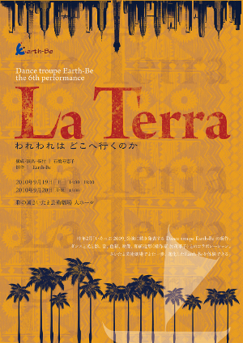
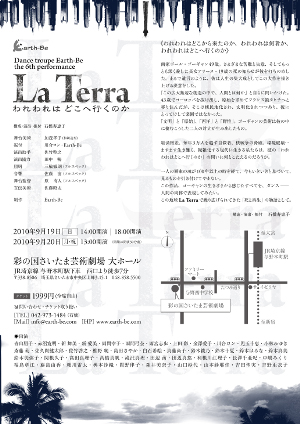

【無事終演！】DANCE TROUPE Earth-Be the 6th performance
La Terra われわれはどこへ行くのか
われわれはどこから来たのか、われわれは何者か、われわれはどこへ行くのか
公演をご覧頂いた方の感想を一部掲載！こちらです！
公演直前 石橋寿恵子インタビューはこちら！
画家ポール･ゴーギャン49歳。様々な苦難と失意、そしてもっとも深く愛した長女アリーヌ・19歳の死の知らせが彼を打ちのめした。 まるで遺言のように、彼は人生の集大成としてこの大作を描き上げる決意をした。 「この広大無辺な創造の中で、人間とは何か」と自らに問いかけた。 43歳でヨーロッパを抜け出し、原始を求めてフランス領タヒチへと移り住んだが、そこは植民地化され、文明化されつつあり、彼にとってけして楽園ではなかった。 「文明」と「原始」、「西洋」と「野生」。ゴーギャンの芸術は彼の中に棲むこうした二人の対立が生み出したもの。
経済格差、毎年3万人を越す自殺者、核戦争の脅威、環境破壊･･･ ますます生き難く、複雑化する現代に生きる私たちは、彼の「われわれはどこへ行くのか」の問いに何とこたえるのだろうか。
一人の画家の魂が100年以上の時を経て、今もいきいきと息づいて、見るものを引き付けてやまない。 この作品、ゴーギャンの生きざまから感じたすべてを、ダンス－－人間の身体で表現してみたい。 この地球La Terraで繰り広げられてきた「死と再生」の物語として。
- 開演時間2010年9月19日（日）14:00 , 18:00 / 20日(月・祝)13:00
※開場は開演の30分前 - 場所彩の国さいたま芸術劇場 大ホール ＞ 彩の国さいたま芸術劇場公式サイト
- チケット全席自由 1,999円
- [TEL]042-973-1484（石橋） [mail] info@earth-be.com
問い合わせ・チケットのご購入 - [TEL]048-858-5500（彩の国さいたま芸術劇場）
公演当日のお問い合わせ - STAFF構成･演出･振付 石橋寿恵子
舞台美術 加茂孝子（和紙造形）
振付 川合ロン・斎藤 萌
楽曲提供･演奏 ポール･ラザー
演出助手 佐竹啓之
演出協力 田中 暢
舞台監督 原 有人（フルスペック）
照明 三輪徹朗（フルスペック）
音響 佐藤 宙（フルスペック）
衣装製作 Earth-Be衣装部
制作 青山朋子／児玉千恵／島田さやか
真藤尚子／鈴木綾乃／鈴木美弥子
滝沢真理／田辺 茜／利根川江理子
間野律子／山口紗代
宣伝美術 佐藤昭太
パンフ写真 高麗写真工房・長澤良晃
映像技術 間野暉司
Special Thanks 倉林 徹
黒沢文晴
関根賢一
春田香歩
吉留恵美子
もとかじ接骨院

